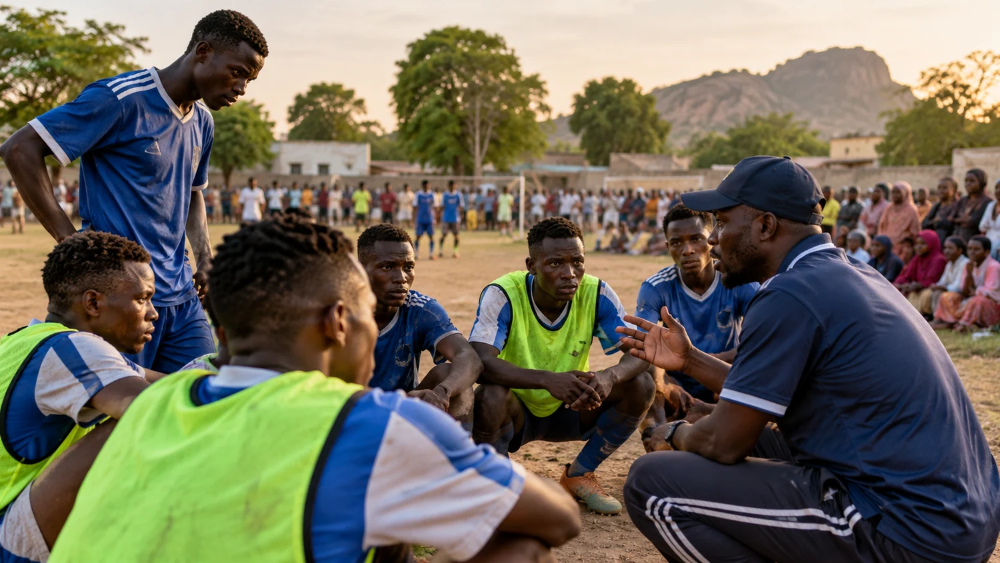

Our media
Our work, in focus.
Education, livelihoods, health and grassroots sports are at the heart of the foundation’s work. Explore our visual programme overview and documented history.
Photo archive status
These are representative illustrations of the programme areas—not photographs of verified AYF events. Original Facebook and Instagram event photographs have not yet been recovered or approved for publication. Once supplied, this gallery will be updated with dated, credited event images.





Historical recordStories supported
Stories supported
by reporting.
See documented programme milestones and source articles. Photographs of those events will appear here once the originals are provided.
Read foundation stories